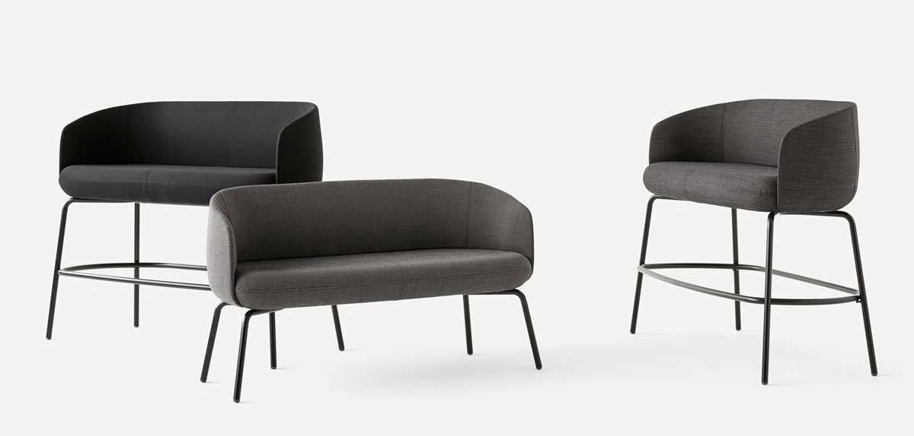
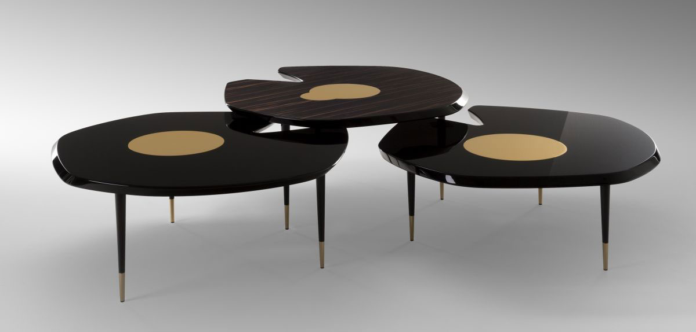
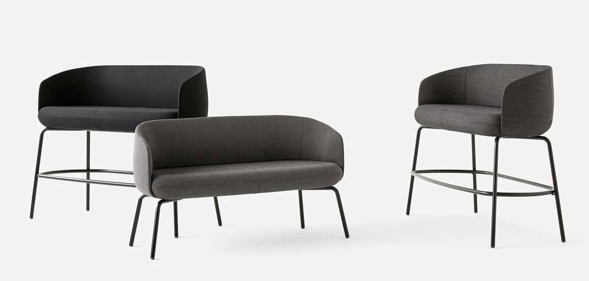
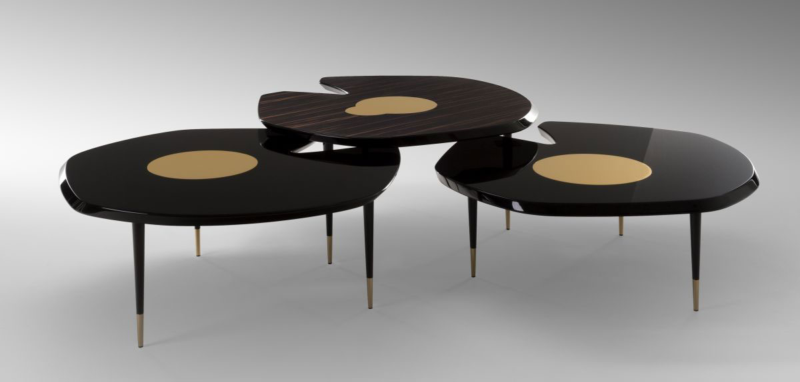

Avoa is a minimalist chair created by Brazil-based designer Pedro Paulø-Venzon. The motivation for the development of the Avoa Chair is autotelia, the autonomous design discourse. The challenge was to think of an object as a quote, a resumption of the minimal elements that form a chair: small seat, economical design, delicate balance. Avoa, as its name says, is on the verge of dispersion. It is about to fly. Contrary to what expectation teaches, the piece beautifully plays with transience and simulation. It does not remind a ‘classic’ chair in its design, nor in its material or in the supposed absolute comfort. It is a game played between precision and deconstruction, therefore the nodal spot of Avoa’s creation.